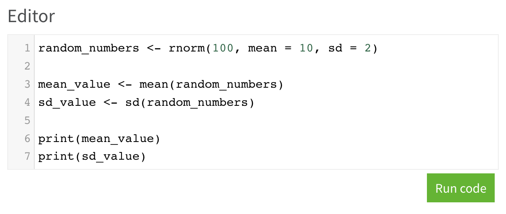

개요
이번 글에서는 R 패키지 webR를 사용하여 별도의 서버 기능을 제공하지 않는 정적 웹페이지(이 블로그 같은!) 에서 R을 사용할 수 있게 하는 과정에 대해 소개합니다.
단 이 글에서는 wasm에 대한 이론적 배경 내용보다는 wasm을 활용하는 방법을 위주로 소개합니다.
정적 페이지
webR의 이해를 돕기 위해서 먼저 정적 페이지 (Static Page)를 설명하겠습니다.
위키피디아의 설명을 인용하면, 정적 페이지는 모든 상황에서 모든 사용자에게 동일한 정보를 표시하는 페이지로, 처음 만들어 놓은 콘텐츠만이 사용자에게 전달되는 페이지(HTML 문서)라고 볼 수 있습니다.
서버에 저장되어 있는 데이터가 변경되지 않는한, 사용자와의 상호작용이나 요청에 관계 없이 동일한 정보를 보여주기 때문에 회사의 홈페이지나 개인의 이력서 페이지, 기술 문서나 설명서, 블로그 등이 이에 해당됩니다.

반대로 동적 페이지는 서버에서 사용자의 입력을 기반으로 추가 연산을 거쳐 결과물을 만들어내는 페이지로, 댓글이나 날씨, 잔여 재고수 , 연산 프로그램 등 정보의 업데이트가 있어야 하는 곳 등 대부분의 웹페이지에 사용됩니다.

정적 페이지의 주요 특징 중 하나는 동적 페이지에 비해 배포가 쉽고, 비용이 거의 들지 않는 다는 것입니다.
가령 동적 페이지의 예시중 하나인 shiny 어플리케이션을 제공하려면 별도의 서버를 준비하고 shiny server를 설치하여 배포 해야하지만 정적 페이지인 블로그의 경우 단순히 markdown을 github 에 올리는 것만으로 배포가 가능합니다.
(연산 로직이 필요하지 않아 사실상 콘텐츠를 print로 출력하는 것과 큰 차이가 없습니다.)
웹과 R
차라투에서는 openstat이라는 사용자의 PC에 R을 설치하거나, 프로그래밍을 하지 않고도 웹에서 R의 기능을 이용할 수 있게 하는 의학통계 앱을 서비스로 제공하고 있습니다.

이 서비스는 간단하게 표현하면 다음과 같은 구조로 이루어져 있습니다.

즉, openstat은 R의 연산 기능을 웹에서 활용하기 위해 동적 페이지를 구성했기 때문에 다음과 같은 문제점이 발생할 수 있습니다.
사용량이 많아지면 서버가 뻗을 가능성 존재. 특히나 R은 모든 작업들을 메모리에서 하기 때문에 데이터에 따라 사용자 당 GB 단위 이상을 필요로 하기도 합니다.
서버에 데이터가 왔다갔다하는 과정에서 (네트워크에서의) 보안 문제가 발생할 수도 있습니다.
모든 연산 결과를 네트워크를 통해 전달해야하기 때문에 사용자의 PC 성능이 아닌, 네트워크 연결 상태와 서버의 PC 성능에 어플리케이션의 퍼포먼스가 영향을 받습니다.
물론 openstat에서 제공하는 (의학 연구용) 분석은, 스케일이나 컴퓨팅 퍼포먼스가 필요하지 않은 간단한 통계 분석 작업이 많기 때문에 별다른 문제가 발생하지는 않습니다.
wasm & webR
wasm은 Web Assembly의 줄임말로, 웹 브라우저 (크롬)에서 실행할 수 있는 프로그래밍 언어 정도로 이해해도 충분합니다.
2017년에 처음 등장한 개념으로, 각 프로그래밍 언어를 대상으로 작업되고 있으며 R에서는 webR이라는 이름으로 2022년 1월부터 작업이 진행되고 있습니다.
이 webR의 정확한 원리는 복잡하지만, 간단하게는 아래 그림과 같이 자바스크립트 코드를 통해 사용자 PC에 백그라운드에서 실행되는 별도의 브라우저(web worker)를 만들어 서버 역할을 하게 한다 정도로 생각하셔도 충분합니다.

webR을 사용하기 위해서는 웹페이지에 web worker를 실행하기 위한 자바스크립트 코드를 추가해야 하는데, quarto를 사용해서 간단한 웹페이지를 만들어 보겠습니다. 이후 배포는 github (github page)를 사용하며, 이 글에서는 이를 다루지 않습니다.
Quarto page의 구성
webR을 정적 페이지에서 활용하기 위해 1. 코드를 입력할 공간과 2. 실행 결과를 보여줄 공간 (에디터), 3. 입력된 코드를 실행하게 할 버튼, 4. 마지막으로 앞서 언급했던 자바스크립트 코드를 추가해야합니다. (단, 자바스크립트가 에디터보다 먼저 로드되어야 하므로 앞서 선언해야함)
quarto에서 html을 실행하게 하기 위해서 아래의 내용을 ```{=html} … ```로 감싸야 합니다.
<!-- 4. scripts -->
<link rel="stylesheet" href="codemirror.min.css">
<script src="codemirror.min.js"></script>
<script src="r.js"></script>
<script src='webr-worker.js'></script>
<script src='webr-serviceworker.js'></script>
<script type="module" src='editor.js'></script>
<!-- editor -->
<!-- 1. code editor -->
<h4>Editor</h4>
<div id="editor"></div>
<!-- 3. run button -->
<p style="text-align: right;">
<button class="btn btn-success btn-sm" disabled type="button" id="runButton">
Loading webR...
</button>
</p>
<!-- 2. code result -->
<h4>Result</h4>
<pre><code id="out"></code></pre>먼저 4. scripts는 (웹페이지에 보여지는 내용은 아니지만) 아래와 같이 크게 3종류로 구분할 수 있습니다.
- 에디터를 위한 script:
codemirror.min.css,codemirror.min.js,r.js - 백그라운드 프로세스 (사용자의 PC에서의 서버)를 위한 script:
webr-worker.js,webr-serviceworker.js - 에디터와 백그라운드 프로세스를 연결하는 script
두번째로 1. code editor와 3. run button 부분은 이미지처럼 UI에 코드를 넣는 에디터(껍데기)와 이 코드를 실행하는 버튼을 만드는데 사용됩니다.

마지막으로 2. code result 부분은 아래처럼 처음에는 없지만 계산 결과를 보여주는 공간을 만드는데 사용됩니다.

추가로 script 파일의 경우는 아래처럼 CDN(웹)에서 불러와도 되지만 해당 파일도 다운로드 받아 미리 정적 페이지에서 제공하게 실행할 수도 있습니다.
<link rel="stylesheet" href="https://cdnjs.cloudflare.com/ajax/libs/codemirror/6.65.7/codemirror.min.css"> (웹에서 사용자가 실시간으로 다운로드)
<link rel="stylesheet" href="codemirror.min.css"> (페이지에서 미리 다운로드 후 제공)
실제 webR 결과
아래는 실제 위 코드를 차라투 블로그 (정적 페이지)에 추가해 빌드한 결과물로 Run code 버튼을 누를때마다 랜덤한 값을 생성하고 평균과 표준편차를 계산하는 webR 예시입니다.
특별히 설치가 필요한 R 패키지와 함수를 사용하지 않는 이상
위의 내용처럼 코드를 바꿔 작성하면 그 결과도 바뀌는 것을 확인할 수 있습니다.
Editor
Result
정리
이번 글에서는 webR을 이용하여 정적 페이지에서 사용자가 R을 실행할 수 있는 방법을 정리했습니다.
이러한 방법의 장단점은 다음과 같습니다.
장점
- R의 간단한 개념을 설명할때 효과적
ex)
head()를 사용하면 데이터의 처음 6개 행을 보여준다
코드와 실행 결과를 이미지로 첨부할 수도 있지만, head(iris) 같은 코드를 webR로 심어두는 것으로 내용을 더욱 효과적으로 전달할 수 있습니다.
만약 learnr패키지를 함께 사용한다면 더욱 효과적으로 활용할 수 있습니다.
- 동적 페이지를 위한 서버 비용을 지출 없음
정적페이지는 무료로 제공할 수 있는 서비스가 많이 있고, 모든 R 연산은 사용자의 PC에서 이루어지기 때문에 별도의 서버 비용을 신경쓰지 않아도 좋습니다. (파일만 미리 서버에 넣어두면)
- 데이터가 오고 가지 않기 때문에 보안상의 문제가 전혀 발생하지 않습니다. (이론상으로는 페이지의 모든 내용을 사용자가 저장해두면 오프라인 상태에서도 webR 활용 가능)
단점
webR은 아직 초기 단계이기 때문에 지원되지 않는 기능이나, 활용할 수 있는 자료가 거의 없습니다.
파일을 업로드/다운로드 하는 것 같이 단순하지 않은 작업은 webR에서 할 수 없습니다.
번외
추가로, 위처럼 별도의 스크립트 파일 준비 없이 quarto에서 바로 webR을 사용할 수 있게 하는 템플릿도 있어 링크를 첨부합니다.
shiny application 또한 webR을 이용해서 정적페이지에서 제공할 수 있습니다.
Reuse
Citation
@online{kim2023,
author = {Kim, Jinhwan},
title = {Web {assembly를} {이용하여} {웹페이지에서} {R} {활용하기}},
date = {2023-09-09},
url = {https://blog.zarathu.com/jp/posts/2023-09-09-wasm},
langid = {en}
}